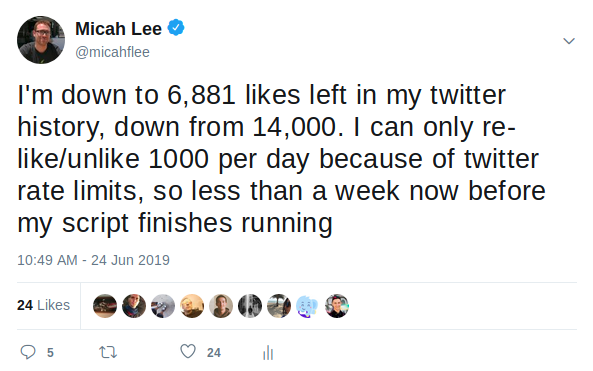

With Semiphemeral you can delete your old Twitter likes, but it's noisy
I don't know if others use Twitter the same way that I do, but I tend to like things quite a bit more frequently than I tweet or retweet things. I'd imagine that if you analyzed my last 10 years of Twitter likes, you could learn much more about me than just by looking at my timeline. My likes probably reveal exactly which political, technical, and social arguments I followed, and which sides I took in all of them.
I recently programmed a tool called semiphemeral to automate deleting all of my old tweets (except for ones that I want to keep), and it also goes back and unlikes all of the tweets that I liked more than 60 days ago -- or, so I initially thought. It soon became clear that semiphemeral only actually deleted the most recent 4,000 likes.
I just released a new version that allows you to delete all of your old likes, but unfortunately there are some... caveats. (You can install semiphemeral with pip3 install semiphemeral, and if you already have it installed you can upgrade to the latest version with pip3 install --upgrade semiphemeral.)
Twitter works in mysterious ways. If you have a very long like history, the only way to delete your old ones is to first relike those tweets (yes, the tweets that you already liked), and then you can unlike them. This means that your friends (and strangers) will get notifications that you, for example, liked a random tweet from 2014 but by the time they open Twitter the notification will be gone, and you won't be listed in their likes for that tweet. And on top of that, running this script may take weeks. Twitter only allows you to like up to 1,000 tweets per day, so if you need to relike/unlike about 10,000 tweets (this is what I did), it will take about 10 days to run. I had maybe a dozen different people contact me wondering if my account was hacked.

But why?
It turns out that the Twitter API call for getting a list of tweets that a user has liked, GET favorites/list , doesn't work as you'd expect. It only returns the most recent 4,000 likes -- and even if you delete those and wait several days, it never returns any that are older than those. In fact, there doesn't seem to be any way at all to get the API to give you a complete list of IDs for old tweets that you liked.
In order to get a list of all of your old likes (since the Twitter API won't give it to you), you must go to https://twitter.com/settings/your_twitter_data and download your Twitter data (note that this is different than your "Twitter archive", which doesn't include information about your likes). Twitter will email you a link to a zip file. When you unzip it there will be many files, including a file called like.js. Run this command, with the path to your like.js, for example:
semiphemeral unlike --filename ~/path/to/like.js
Using the like.js file from your Twitter data, this will first fetch all of the tweets that you liked, then it with relike and unlike each one of them. Each relike will trigger a notification, but at the end of the process your likes will have actually been deleted.
Each time it hits the 1,000 likes/day rate limit, semiphemeral will pause for 24 hours before continuing (if the command crashes or you cancel in the middle for any reason, it's safe to run it again to continue where you left off). If possible, I recommend you run this in a screen or tmux session on a server somewhere so that it doesn't get interrupted when you suspend your laptop. And if you're running semiphemeral on a cron job, I recommend that you disable it first, and then start it up again when it's finished.
New likes don't have this problem, so as long as you regularly run semiphemeral delete, your new likes will automatically get deleted.
You can find the source code and readme for semiphemeral on it's github project page.